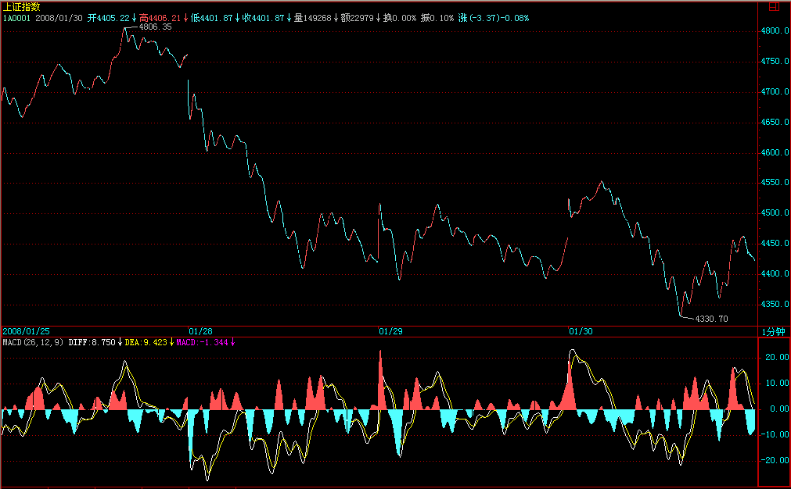
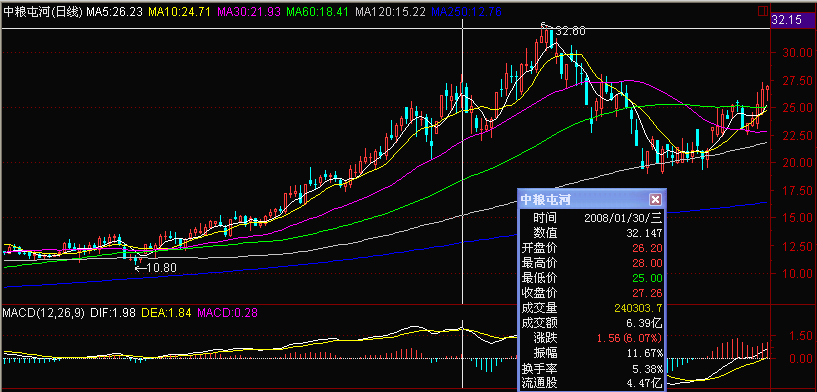
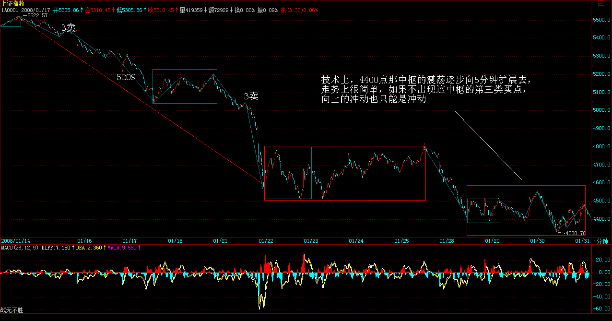
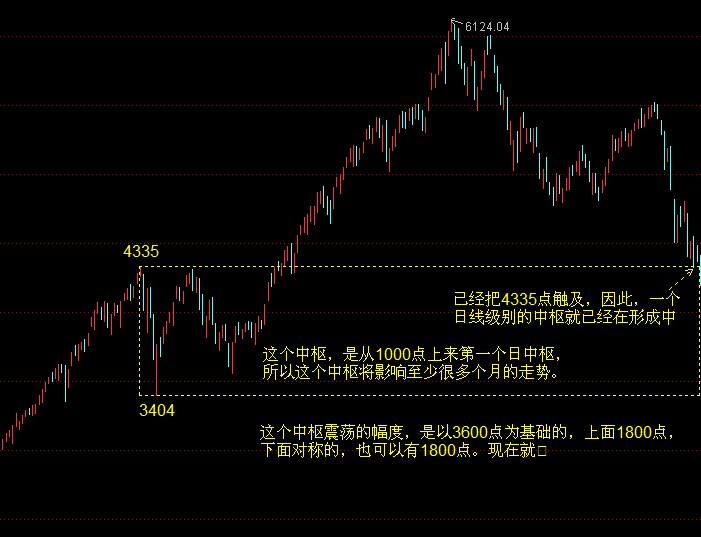
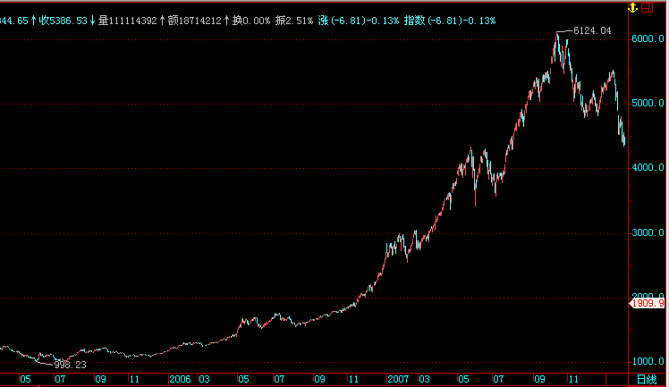
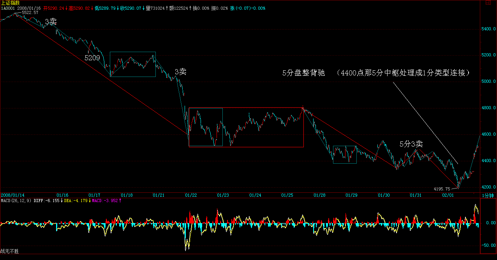
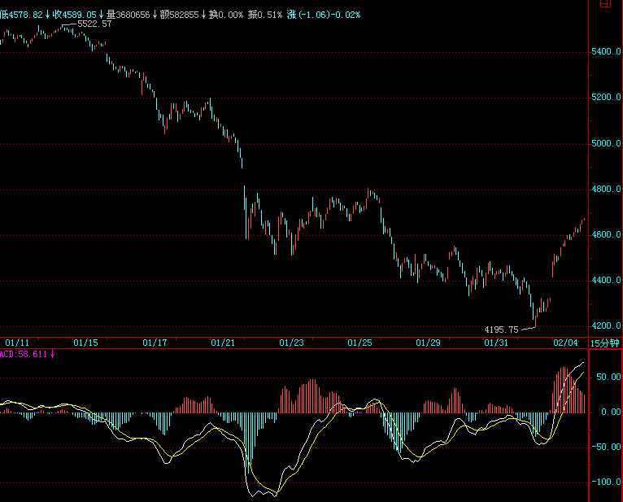
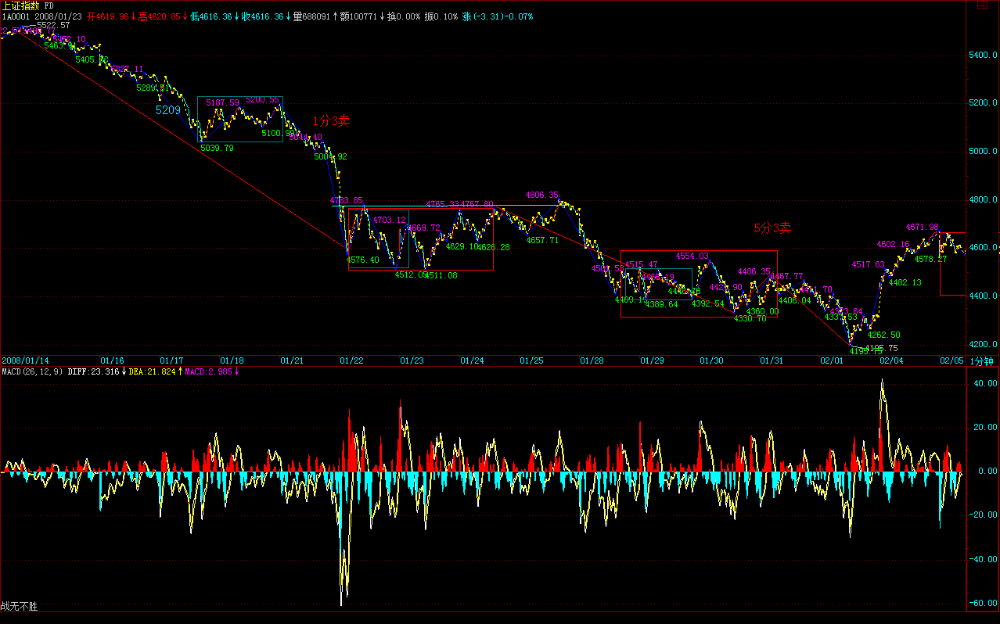

|
 |
教你炒股票97：中医、兵法、诗歌、操作1
(2008-01-29 15:49:06)
世界上，从来不缺乏贪婪，最大的表现之一，就是上帝式思维。有一上帝，你信了他，所有事情就是他的，你就又天国，又永生的，这本质上，就是人类的贪婪所制造的幻象。
在市场中，操作中，这贪婪的最大表现就是希望寻求一种预测性的、一劳永逸的上帝式指标、模式，先验地决定了一切，然后有这东西，在市场中就可以又天国又永生地财源滚滚了。
这是什么？典型的贪婪思维，这种人，佛出世都救不了，最终就是当青蛙的料。而市场中，最多这种人，最下劣的，就是希望找一根万能拐杖，最好这拐杖可以自动给出所有的买卖，这样就什么都不用干地财源滚滚了。
贪字和贫字就差那一点，如此贪婪的想法，不被市场所屠杀，真是笑话了。
市场中操作，最相似的，就是和中医、兵法、诗歌类似。
学中医，你首先要把中医的理论、系统、思维方法，分类原则等等给搞明白，按照中医的系统，所有的病都是有一个对应的理论输出与实际相符合，这就如同本ID的理论，所有的市场机会都会被本ID的理论所一一对应地输出。
但你光知道输出，什么用都没有，你学了一大堆理论，没什么用，因为理论知道和应用是要靠人的，而人的素质、水平等等的不同，在应用中相差就太远了，所以最终都归结于人的修炼。
但是，理论的输出是最基础的，你连理论的分类等等都搞不清楚，那么谈应用就很可笑了。所以，首先你当然要完全吃透理论。
一个中医，学了理论，然后就要开始玩望闻问切之类的游戏，这就等于本ID理论中看市场机会的当下显发。有些人，总是想预测，那么请问，一个医生，他知道下面肯定有一个病人要来，难道他还需要预测一下这病人的性别、什么病，可以开什么药？如果世界上有这样的医生，你敢去看吗？
同样，市场的机会的到来，就如同要来的那个病人，你不需要对他预测什么，点位、时间、什么都不需要，你只需要等他来的时候对他望闻问切就可以了，事情就这么简单，为什么这个思维就拐不过来？
机会必然按理论的要求输出，第二步就是看机会的显发，对之望闻问切，这就是更高的一种要求。这就如同医生，能熟练地望闻问切，那是需要功夫的，需要实践中增长能力。所以，你开始的时候，总是看走眼，这太正常不过了。多看，多练习，这就唯一的渠道。
再说一次，一定要看走势图，那是世界上最昂贵的图画，最昂贵的艺术品，多看，就如同培养你的鉴赏力，为什么玩古董的，很多人总是被假玩意骗，而有人就能专破假玩意，这就是鉴赏力等的问题，但这是需要磨练的。磨练的时候，被骗几次，那不是最正常不过的事情？
为什么很多人在市场中很痛苦，就是他不热爱这走势，走势是最好的艺术品，你站在热爱的角度，才能激发你的鉴赏力。否则，你脑子里总是被赢亏之类的贪婪之念所占据，眼睛怎么可能不被蒙蔽？
望闻问切有成了，后面最难的就是操作了。操作，就如同中医的开药方。会看病，基本就等于中医的1/10，而用药、开药方的难度，就是后面的9/10。而没有最后这开药方，前面的所有东西都是白搭的，同样，操作也是这样。
开药方，就如同行军布阵，所谓用药如同用兵，如何用，这可以用你一生去修炼。这就如同操作，操作是一生的事情，除非你离开市场。
中医开药方、因人、因时、因地等等因素的不同而开，就如同打仗，哪里会有一样的仗？仗仗都不同。中医不同西医，西医就把人当机器，所有的人，只要是所谓同样的病，就给你同样的药，完全的流水线机械化生产，而现在很多人在市场中的思维，就是这种思维。
当然，所有的不同里有这一个共同“不患”的基础，例如，市场的运行的“不患”基础就被本ID的理论所完全描述。同样，所有用药的“不患”基础也被中医的理论所描述。也就是，无论怎么折腾，都出不了这基础。这是不同中的同，患中的不患。
明白这点，操作就有了一个大的不患背景，而这背景之上，就是一个创造充分显法的过程，每个人，按照自己的能力、修养等开出不同的药方，给出不同的操作记录。这里是一个没有止境的过程，不断修炼下去。
具体说，就是在一般程度上，你必须遵守买卖点的原则去买卖。但是，这并不是一定的。例如，本ID就经常愿意在买卖点偏移一点的地方去买卖，为什么？因为那样，可以买卖到更多的数量，或者可以制造出一些特别的东西达到更大的目的。
这就如同写格律诗，你开始的时候，必须严格按格律来，如果没有按格律来，那是你的水平问题，你千万别以自己是写拗体来自我安慰，那将害了你，以后你就永远和真正的格律诗无缘了。但，当你已经自由于格律，得心应手时，你就可能要根据诗歌的内容，自设声律而构成奇响成为所谓的拗体，这时，就是出神入化的过程了。而操作，同样如此。
对不起，还想写，有一坏蛋打电话来说要谈一个项目的事情，这个坏蛋太熟了，不能推，就先写到这里，以后继续
注：一熟悉理论 二望闻问切，静态图分析，看机会的显发 三操作 四 出神入化操作
97课（回复）
看别人脸色的日子总是不好过的
(2008-01-30 15:23:08)
这题目说的什么，大家都很清楚。今天的消息，刺激了一个震荡高点，然后再回杀，由于减息的玩意还没出来，所以，尾盘赌消息的又来了，这就是发生在看别人脸色过日子的日子里的一件无聊事情。

看着600737、600078之类的股票，是否有点感动，这世界是需要不看别人脸色的人的，但，这东西是合力的，光有几个这样的人，成不了气候，如果别人都成了爱看别人脸色的人，那这市场还是别人的，最后，剩下不想看脸色的，可能也转去玩别的不用看别人脸色的活动了。

说实话，现在本ID已经没有上次接石头的兴趣，对今年的行情，本ID去年已经给了明确的定位，就是题材股大搞，不管指数，所以才有了跌了1000多点还创新高的品种。
但指数还是会起来的，在那展望里，本ID给出本年的节奏是“扬抑大扬大抑”，所以，多头还是会有面包的，只是多头如果还看别人的脸色，没点自我精神，那本ID宁愿把节奏说错了。
中石油那些玩意出来前后，是一个转机可能出现的时候，这时候也到了，但这东西需要合力，本ID现在确实没兴趣再去折腾大的玩意了，把自己的一亩三分地种好就算了。但呼吁一下总是可以的，合力，需要大家一起来。
说实在话，本ID宁愿A股跌到2500点，也希望见到美国全面破产，让美国再来一次1987年，这是本ID最愿意看到的。
但必须很清楚地说，美国佬这次会用所有的坏招来摆平的，问题的关键是，不要当傻子去给美国佬埋单。
大盘，很简单，现在是纯消息主导，明天美国要减息了，这边就又会冲动一下。但这种冲动不是以我为主的，以我为主，还没有找到合适的借口。
技术上，4400点那中枢的震荡逐步向5分钟扩展去，走势上很简单，如果不出现这中枢的第三类买点，向上的冲动也只能是冲动。

580989，如前所说，震荡幅度减少，但震荡机会依然很多，0.6这个中枢的威力是否够教科书，有眼睛的都会看了。
第一次年线，不出意外，还是如去年底所说，是一个喜剧。问题的关键是，这次喜剧之后，如果没有了自我意识，最终只能是悲剧。
先下，再见。
没有信心，一切瞎掰
(2008-01-31 15:13:08)
3点半有一无聊人从大连专程过来要谈一香港市场收壳的事情，谈完以后回来会写一篇纯技术分析后面走势的帖子。本ID现在的心情已经完全过年化了，想起还要有事情干就头疼。
大盘今天的走势是一点都不奇怪，看别人的脸色，就是这样的了。减息又怎么样？其实，即使对于美国，减息与否，要死还得死。减息后一旦引发资金大量抛售美圆资产，那死得更难看，可惜，现在接收这大量外逃资金的池子就缺一个中国的，想起就没劲，早干什么去了。
经济是一种专门的学问，管经济的就该至少是学经济或在经济圈里泡大的，否则，打铁的、挖地的、修坝的、卖大饼的，谁都可以经济一下，这经济怎么经济？ 一句话，这次下跌，估计把印花税弄下去的可能性还是不大，大概，还需要更猛烈的暴跌，当然，反弹会有的，印花税一日不下，本ID的兴致将继续低迷。 今年，就看三月的会后有什么改变了，如果没有，那该怎么就怎么了，那种接石头的活，本ID肯定是不会再去干了，这么高的交易成本，凭什么啊？
短线技术上，没什么可说的，现在这1分钟的中枢突不上去就继续下台阶。个股方面，很多股票都要先主动回一下了，否则，顶在高位上抬杠铃，没那必要。 现在，关键不是股市本身，而是信心问题，一个最简单的问题，为什么中国的投资者就要忍受全世界最高的交易成本。 有谁能回答这个问题？
本ID在去年底已经明确说过了，今年一定要看到印花税的下降，不管是谁，做错了就要改，不改就不行。 本ID现在根本不担心股市，因为有更担心的，就怕这次经济的对局，一旦应付错了，那比股市更严重的事情还等在后面。 我们能应付对吗？抱歉，本ID没信心。
如果你还有心情，就请读读本ID这个梦：“步老杜《登高》韵记梦 2008-01-26
10:23:21 ”
先下，再见。
大盘中线技术分析
(2008-01-31 18:44:04)
谈完了，那人赶飞机去了，专门跑一次，这事情还真没法推，苦啊，又多一件无聊事情。回来先把帖子写了再吃饭吧。本ID就怕答应的事情不完成吃饭都不安心。
收盘的帖子，非技术的纯粹直话直说的，这是走势后面必须的东西。但操作上，还是必须按技术来，所以技术是第一的，我们可以用一些语言对分力进行敲打，但这不能蒙蔽了技术的眼睛。特别，对于一般的散户来说，除了图形，你是最公平地和所有人同时看到的，你还能有什么依靠？
还是和3600相关，为什么？因为上海的指数从一开始就和这相关，例如90年代初的45点，2001年的2245点等等，这次的行情，一样与此相关。
4335点的530，6124点的高位，相差基本就是1800点，下来的第一个位置4778点，就是1800点的3/4，那么，现在，到了1800点这个位置，所以这个位置是很重要的，而且与年线相关。5522点下来的1200点，也在这个位置，所以这个位置是诸多因素所相关，技术上很重要。
由于这次下来，已经把4335点触及，因此，一个日线级别的中枢就已经在形成中，4335点上下就是这个中枢的一个必然部分。这个中枢，是从1000点上来第一个日中枢，所以这个中枢将影响至少很多个月的走势。

也就是，现在，从中线的角度，一个大的日中枢震荡已经形成。这个中枢震荡的幅度，是以3600点为基础的，上面1800点，下面对称的，也可以有1800点。换言之，现在就算跌到2500点，也不过在这个中枢震荡的范围内。
有了这个中枢震荡的大结构，对后面的市场走势就有了一个很宏观的把握。显然，目前这个中枢的中间位置，会在很长时间内反复见到。像2500点、6100点，都如同580989在0.976的那样的瞬间震荡位置，而目前位置，就如同最近580989的0.6上下，是一个反复可以见到的位置。直到这个中枢被破坏为止。
这个中枢震荡，可以以450点，3600点的1/8为一格，上面，4778是第一线压力，5228点是第二线压力，下面的位置如此类推。当然，在具体的划分中，可以把450再细分，这对短线有一定意义。
由于目前是一个日的中枢，因此，最大的偏移级别就是30分钟的，如果有一个30分钟的向下偏移，那将构成最好的中短线机会。而且，类似5分钟的偏移，也构成好的短线机会。 当然，如果你的超短线的，也可以关注相应的1分钟偏移。
在足够长的时间内，所有的市场机会，都会是因为对于该中枢的震荡偏移所引发的，配合30、5、1等的内部结构图，你将在这大型震荡中如鱼得水。

本ID早说过了，今年只要你会震荡，你赚的钱绝对不比去年少。有了这样一个大的震荡图，抽血的机会多了去了，好好把握。
节前后市场，能否依靠年线和中枢中轴制造一次向4778点的中枢偏移，明天就有初步答案，如果能坚守在目前位置震荡上5日线，而周一又不出现前两周一样的坏消息，那么，这种偏移就有基础，否则，绝对需要先砸出空头陷阱再玩这游戏。
注意，本ID对市场从来都是充满信心，但本ID的信心可不是死多头那样一定要向上的信心，本ID的信心是在震荡中抽血的信心，那样一定要单边上涨才赚钱的幼稚行为，本ID没兴趣搭理。
本ID没信心的是市场以外的事情，只要本ID有兴趣，大熊市一样可以玩得很开心，就别说震荡市了。但市场以外的事情，本ID真的没信心，而市场以外的，才是本ID所牵挂的。
本ID一早说过了，对于本ID来说，经济变成怎么样，又有什么影响？但对于大多数人，经济的走势太重要了，比股市的要重要得多。
本ID希望每个中国人都有自己的面包，本ID日夜担心的，是中国三十年的经济大升浪会被某种幼稚的因数所打断，除此之外，本ID没什么可担心的。
大升浪被打断了，本ID照样可以风花雪月花天酒地419，很无耻但很经济地等着在经济大跌势的末端抄大底，但其他人呢？
不说了，吃饭了，该什么是什么，万古云霄一酒杯。
节前连涨三天？就不许！
(2008-02-01 15:17:48)
听说有人还在发节前连涨三天的梦，但就不许！类似的梦还有，例如现在砸下来了为了奥运如何如何，简直脑子进水了，别以为股市有什么真正的地位。按照市场经济，股市当然有着绝对高的地位，但是，这不是现实。
请注意一个事情，听说春晚里将有一个节目对所谓的股民进行强烈嘲笑的，如果这节目最终播出，将是对三十年经济大发展的最大讽刺。现代经济，最高级形式就是虚拟化的，100多年前，美国还比不上阿根廷，就是因为美国大力发展了虚拟经济而阿根廷没有，所以，最终阿根廷也就剩下别为她哭泣的歌声。
股民，这个称呼本来就是侮辱性的，应该是投资者，这是构成现代经济最重要结构的伟大人群。一个不尊重投资者的国家，不可能有强大的虚拟经济和真正强大的经济，这就是历史的结论。
如果脑子里还有一丝幻想的，请再把本ID关于今年走势展望的帖子再读一次：“2008年行情展望 2007-12-20
15:59:05”
今年的行情，就是早干早有面包的走势，真正的投资者，在12到1月的题材股走势中，已经赚到了第一笔买面包的钱。有些可笑的人，觉得，4778点到5522点也算行情啊？千万别看不起这一段，如果在大的跌市里，这可能就是全年最大的一轮走势了，而在今年，有极大的可能，这就是第二大幅度的上涨。
在展望中，本ID已经很明确说了，今年的节奏是“先小扬再抑接着大扬后大抑”，而且强调“至少有两个顶部是必须注意的，第一个就是6124点大调整的第二段上升所构造的顶部，这是一个小顶”，5522点就是这样一个顶。
本ID在剧本那次说了：“关键看在5462到5675点时间段内政策面的风向，风向不对，那就先把买胶水的钱换成买棒棒糖的，一人一个棒棒糖，看你要棒还是糖。”显然，5522点后平安、美国之类的因数足以让胶水换棒棒糖了。但后面的剧本依然有效，就如同本ID告诉你至少要见到腰斩的中石油一样。那胶水糊的鸟儿会有的，那就是本年第二波行情，现在，不过是为这行情进行准备。
大概没有人会注意，本ID在1月15日故意给出的这个帖子也被很多人认为是炒冷饭，请现在再去看看这特殊时间里帖子内容的实用性，看看当时日线顶分型刚构成后你是否如课程那样操作了，如果你真认真看了里面的内容，你该怎么操作还用本ID说吗？如果还不明白，请再看一次：“教你炒股票93：走势结构的两重表里关系2 2008-01-15 18:08:05”
注意，本ID只是陪练，陪练的任务，只是在关键的时候把该用的工具放到你眼前，如果你看不到，那就算了。
本ID有时候说的结论会有所修改的，例如，原来对中石油，给出的就是如中人兽，也就是到30筑底上去，那是因为那时候期货这玩意还没被打压住，后来，一明确这玩意被压住了，本ID就把那至少24的酒席故事告诉各位了，这就是有所修改，为什么？一切是合力，有一个重要的分力改变了，当然要有所修改。
但是，有些东西，本ID不提，就是无所修改。例如，对于20年的大牛市，20年后至少3万点的结论，本ID没有任何修改的必要。除非中国经济自废武功，否则，本ID的结论无须修改。
其实，对行情的转折契机之一，本ID前面早就明确说过，只是看的人不注意，就是要等中石油那10亿玩意出来的前后，底部不是一天构成的，是要反复制造恐慌搞出来的。
有人可能觉得很残忍，废话，不恐慌，没人放血，哪里会有底部？
这几天是什么？就是前期强势的题材股补跌，这是所有探底行情中必须有的，强势股补跌后，行情才可能进入真正的筑底。而这点，本ID早就说过，没有人会永远举杠铃的。
那么，行情怎么慢慢点燃？行情的点燃，都需要领头的，也就是有一个傻子，疯狂地裸奔，把大家逐步唤醒兴奋起来。这个先裸奔的，一般只有三类，新股或有突发大题材的，还有就是前次行情崩溃的祸首以及率先被打压调整的。
如果你还没见到裸奔的，那么就意味着，行情还没被点燃，依然在底部构造阶段。现在的问题不过是：睁大你的眼睛，发现那准备或已经率先裸奔的。
其实，行情也简单，有人全球裸奔的，就是大行情；有人全国裸奔的，就是中行情；有人全市裸奔的，就是小行情；有人只能在家里裸奔最多在窗口晃悠两下的，那就是反弹行情。 行情，与最开始的裸奔力度相关。当裸奔蔓延了，行情就开始展开。当所有人都习惯于裸奔了，行情就因高潮而死。
今天的走势，不过是先尝试砸一下陷阱并让那些幻想节前连涨三天的丢一下脸。当然，连涨两天还是有希望的，本ID倒不拒绝两这个数字。前提是，请先冀望周末没有什么不招人待见的事情，其次，那石油出来时不要过分变态。
现在，更大的问题是，这么高的印花税，我们搞一波上去，难道就为了让平安能顺利圈走1000亿？想起这个事情，本ID完全没有冲锋打头阵的兴趣了。自由世界的勇士们，你们冲吧，本ID在后面跟着，一看你们不行就放枪给你们送行。
反弹会有的，面包会有的，但在春晚要被严重嘲笑而还要被平安之流上千亿地合法打劫，并且更要继续接受一个最高印花税的奖赏，在这种情况下，谁还愿意当炮灰去发动一轮全球裸奔行情呢？
今年，我们去铁岭裸奔，或者保定也行，各位选择吧。
周末，不妨先在家里练习练习？先下，再见。
没有幽默感与修养成不了好的操作者
(2008-02-01 19:17:37)
快过年了，到处繁忙，还是待在家里塌实。一般周五晚上都不写帖子，这次就破例一次。因为在周六、日不谈股票，就抓紧今晚再说说股票。
资本将人异化，其实市场同样让人异化。看看现在市场里的人，很多都变得神经叨叨的，心里就剩下黑马、上涨之类的机械反应与欲望，这样的市场人，真是太悲哀了。
没有幽默感与修养成不了好的操作者，一个看到铁岭、保定只会想到暗示了什么股票的操作者，也不可能有什么长期的操作成功。
铁岭不过是来自赵本山的一个幽默，而保定就是郭德刚的，当然，南方的朋友可能有点不熟悉，这不奇怪，但其实就算你不知道这些幽默的意思，从文中对裸奔的分类就能明白其中好玩的地方。
本ID一本正经地解释这个问题，其实就很搞笑，这只是小事。但有些孔男人的学生，见到本ID说第一次见年线是喜剧，就以为一碰到年线就起来就是喜剧。大概，孔男人类人写的东西都是这样的白开水。知道什么叫以哀景写乐倍增其乐吗？想想，对5日线的回试还要故意砸穿恐吓部分不坚定的，更不用说这250天线了。不把这哀景写足了，哪里会有好的喜剧，连这点修养都没有，还操作什么股票？
很多事情都是相通的，例如在顶部的时候，就是以乐景写哀倍增其哀，文学、艺术和市场是相通的，只不过你有没有这种修养和感触而已。
市场，最终是人的修炼，你的全部修养是否花架子，在市场中一下就检验出来。很多所谓的文化人看不起市场，因为他们不过是些花拳绣腿的玩意而已。
一个真正的成功的操作者，一定是一个哲学家、实干家、艺术家、有幽默感的人，否则，市场中任何的弱点，可能就足以致命。
年线上的中国式喜剧
(2008-02-04
15:20:02)
第一次碰年线要上演喜剧，这在去年12月已说。当然，真到上演时，相信的人就不会多了，不相信的人多了自然就更喜剧了，市场总是如此。所以，就算把剧本告诉你，绝大多数还是不行，这点，已说多次。不过，经过这次，大概各位对本ID上周所说的“哀景写乐倍增其乐”应该会有点切实的体会了。
这里，本ID再明确地预先告知各位，这次很中国式地把新基金砸出来了，但这还不是真想要的。前面已说，这次砸出印花税的可能性很小，那么，下次，或者再下次，总之，该改变的总要改变。印花税的改变，是2008年的目标之一，这点已经多次说明。
技术上，十分凑巧的是，周五低点对应的线段刚好是360段，一个圆周。很多人老问3600是什么？为什么和上海指数相关？这问题大概不需要再问了吧。有人还要问，周五有底背驰吗？如果你连周五的背驰都看不出来，那只能重读了。看看15分钟图，想想该是哪两段比较力度？
(娇：与07年8月同。1分类型构成线段类背驰在15分图上明显）


有些人可能又要问，如果没有周末的利好，那背驰能成立吗？问这话的人，根本就等于没看本ID的课程，背驰成立只保证回到原来最后一个中枢，这点和有没有消息没关系，实际上，上周五收盘前已经达到这一点，而所谓的利好不过是加强其力度而已。
实质上，今天的上涨，并没有脱离最后一个中枢的范围，4500点上下那5分钟中枢的第三类买点并没有制造出来，因此，从技术上，依然还可以看成是该中枢的一个震荡。

而且本ID更要问各位一句，如果没有周五的狠砸，这利好能出来吗？很多事情，都是一环扣一环的博弈，里面的水能浅吗？
不妨再问各位一句，怎么把印花税搞出来，各位有什么建议，请发表。
这次反弹的高度，决定于恶性圈钱最终是否有所收敛，当然，外围因素也有一定的影响。但这次下来，最主要是恶性圈钱闹的，现在已经开始有人折腾这方面的事情，现在，还是进步不少，至少各种声音都能通过某些途径达到应有的分力。所以，这折腾能折腾出什么，也是很重要的。
其实，今天的利好掩盖了一个很大的坏因素，周末央行高层说，大企业应该主要到资本市场解决融资问题，并表达银根绝不放松的观点。当然，这些人不是最后定事的，他们的话也没什么准，不过，这证明某种观点或利益还是很有市场的，这就是后面的不确定因素或者说是大的隐患。
技术上，还是原来分析的，450点一格，4778点破不了，就把前面两5分钟中枢搞成一个30分钟的震荡出来。
个股方面，今天普涨，关键是后续的能力。还是周五说的那三类，一般股票，反弹到阻力位置压力就大了，而一切套牢压力小或有大资金、新题材的股票，反而容易有持续的表现。
注意，今年做股票，就是要跌到位了敢买，涨多了敢抛。那种涨了才追，跌了才砍，来回几次就可以被清理出局了。如果技术不好，宁愿坐电梯也不能追高杀跌的。当然，最好不要坐电梯，要不坐电梯，唯一的办法只能是，涨的时候，就睁大眼睛看有什么大级别的卖点出现，见到日、周的顶分型，就要根据自己的水平去操作。
明天，就看中石油表演了，大盘会有所震荡。
|
|
|
|